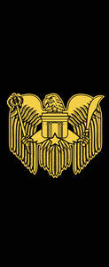

Trade Mark Journal No.2026/011 13 March 2026
UK00004347123 28 February 2026 (25)

- Class 25
- Footwear; Sneakers [footwear]; Fashion hats; Casual footwear; Ready-to-wear clothing; Knitwear [clothing]; Footwear for sports; Sports footwear; Footwear [excluding orthopedic footwear]; Footwear for sport; Footwear for use in sport; Leisure footwear; Parts of clothing, footwear and headgear; Flip-flops for use as footwear; Footwear for women; Wooden shoes [footwear]; Footwear for snowboarding; Insoles for footwear; Sportswear; Pumps [footwear]; Leather clothing; Clothing of leather; Leather (Clothing of -); Footwear not for sports; Athletic footwear; Foulards [clothing articles]; Golf footwear; Footwear uppers; Uppers (Footwear -); Menswear; Athletics footwear; Beach footwear; Footwear soles; Soles for footwear; Playsuits [clothing]; Clothing; Footwear for men; Clothing for sports; Sports clothing; Denims [clothing]; Japanese style sandals of leather; Fishing footwear; Jackets being sports clothing; Casual clothing; Sports garments; Dress shoes; Paper clothing; Trainers [footwear]; Clothing for leisure wear; Tips for footwear; Footwear (Tips for -); Japanese style clogs and sandals; Shoes for leisurewear; Inner socks for footwear; Face masks [fashion wear] ; Bandeaux [clothing]; Clothing of imitations of leather; Leather (Clothing of imitations of -); Leather garments; Uppers for Japanese style sandals; Footwear made of vinyl; Shoes for casual wear; Men's clothing; Articles of clothing made of leather; Climbing footwear; Hats (Paper -) [clothing]; Paper hats [clothing]; Heel pieces for shoes; Sneakers; Canvas shoes; Soles for japanese style sandals; Dance clothing; Leisure clothing; Smart clothing; Japanese traditional clothing; Knitwear; Corsets [clothing, foundation garments]; Clothing for martial arts; Articles of clothing; Headbands [clothing]; Headbands for clothing; Cashmere clothing; Athletic clothing; Kendo outfits; Clothing for wear in wrestling games; Furs [clothing]; Clothes for sports; Skating outfits; Party hats [clothing]; Clothing for cycling; Clothing for gymnastics; Clothes for sport; Clothing for skiing; Corsets [foundation clothing]; Corsets being foundation clothing.
Mr Gordon yaw yirenkyi Mantey